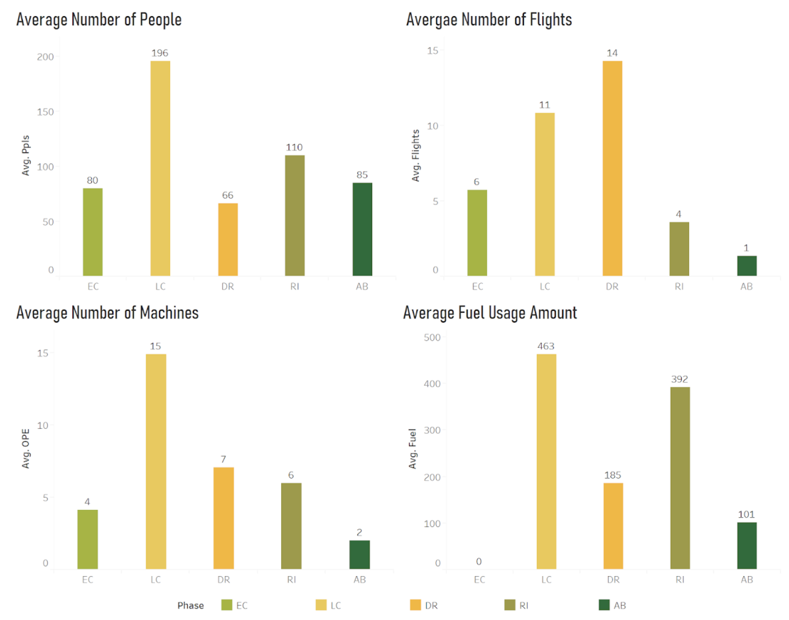
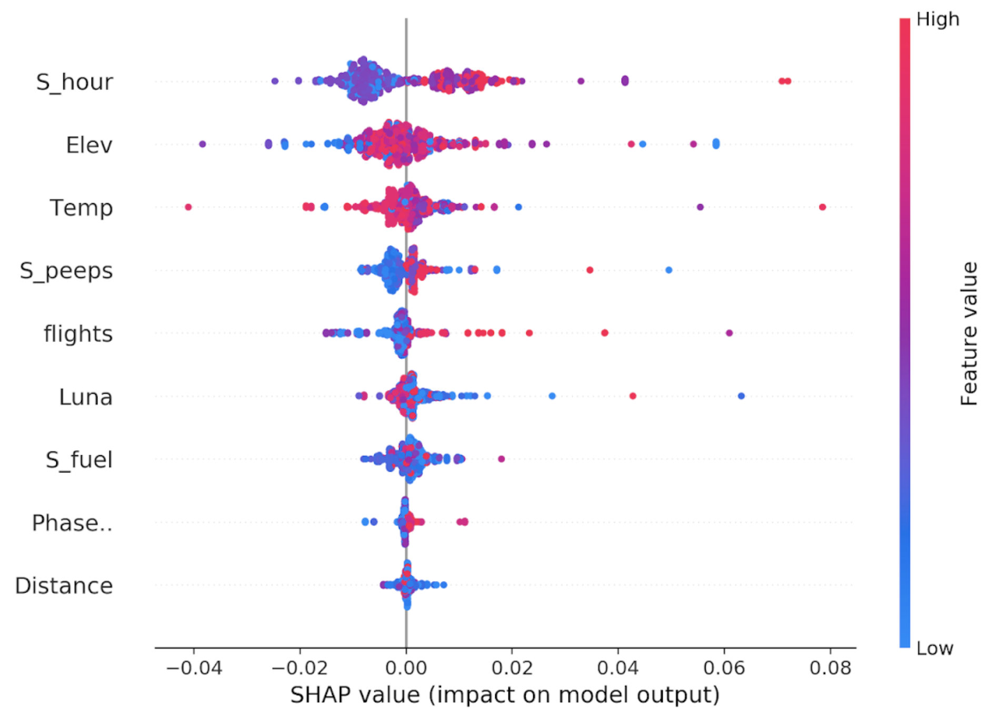

OIL DRILLING'S IMPACT ON AMPHIBIANS IN THE AMAZON RAINFOREST




Methodologies & Tools
Programming Language | Python, RMethodologies | Machine Learning, Statistical Anlysis, Tableau, Plotly, Shiny
Introduction
With the increasing demands to meet the needs for transportation and energy, worldwide infrastructure investment is projected to reach unprecedented levels. Oil and gas wells were drilled in the Amazon forests to fulfill over two-thirds of this energy demand. During the oil drilling process, changes in noise and other types of disturbance might affect the amphibians. It is widely assumed that infrastructure development has negative impacts on the wildlife. In this project, statistical analysis and machine learning models would be adopted to analyze human behaviors' effect on the amphibians in the Amazon forests.
Get in Touch!
HAVE A GREAT OPPORTUNITY FOR ME? |
Feel free to drop me a line